Marketing por correo electrónico¶
Los correos electrónicos son un medio de comunicación efectivo y completamente personalizable que puede llegar a cualquier audiencia, no importa su tamaño. Podemos medir cuánto éxito tiene nuestro correo electrónico con facilidad, especialmente cuando usamos una frase muy atractiva.
El marketing por correo electrónico de Odoo le brinda herramientas de diseño de correo electrónico, plantillas y otras funciones. Le ofrecemos estas herramientas para crear correos electrónicos llamativos, construir campañas exitosas y dar seguimiento a la efectividad dentro de una sola aplicación.
Tablero de Marketing por correo electrónico¶
Para empezar, busque el icono correspondiente en el tablero de Odoo y vaya a la aplicación para ver su tablero principal (en la vista de kanban predeterminada).
Para ver todos los mensajes en la base de datos, quite el filtro automático Mis correos de la barra de búsqueda.
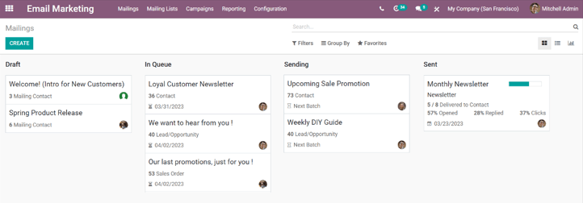Nota
En la barra de búsqueda estará el filtro Mis correos de manera automática. Esto significa que la única información que está viendo (en ese momento) en el tablero de Marketing por correo electrónico son los correos que el usuario actual creó, envió o si es el responsable por ellos.
Para quitar el filtro haga clic en la X que aparece junto al filtro. Así podrá ver la información para todos los correos en la base de datos.
Vista kanban y etapas predeterminadas¶
Las cuatro columnas en la vista kanban son las diferentes etapas por las que pasan los correos que se han construido dentro de la aplicación Marketing por correo electrónico.
Las etapas son: Borrador, En cola, Enviando, Enviado.
Borrador: el correo electrónico apenas se está creando.
En cola: el correo electrónico se programó y se enviará en una fecha futura.
Enviando: el correo electrónico se está enviando a los destinatarios.
Enviado: el correo electrónico ya se envió a los destinatarios.
En esta vista podrá ver recuadros que representan las campañas de correo electrónico que ha creado y que puede arrastrar y soltar en las diferentes etapas.
En cada bloque de correo electrónico en el tablero de Marketing por correo electrónico podrá ver la información clave relacionada a esa campaña en específico.
Cuando pasa el cursor por encima de la esquina superior derecha del bloque podrá ver tres puntos (⋮) aparecer. Si da clic en estos tres puntos, aparecerá un pequeño menú desplegable donde tendrá la opción de cambiar el color de la campaña, eliminar el correo o archivar el mensaje para uso futuro.
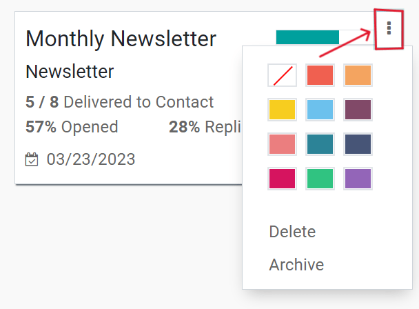En la esquina superior derecha del tablero de Marketing por correo electrónico podrá elegir otras opciones de vista, como Lista y Gráfico.
Vista de lista¶
Si hace clic en este icono ☰ (tres líneas verticales) activará la vista de guilabel:Lista, la cual le brinda la misma información importante, pero en formato de lista.

Vista de gráfico¶
Si hace clic en este icono 📊 (gráfica de barras) activará la vista de Gráfico, la cual le brinda la misma información importante, pero en gráficas (y tablas) que podrá personalizar.
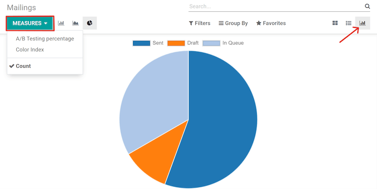En la esquina superior izquierda hay un menú llamado Medidas donde podrá encontrar más opciones para personalizar la vista de gráfico.
Las opciones que verá en este menú son: guilabel:Porcentaje de testeo A/B, Índice de color, and :guilabel:`Número (que es el que está seleccionado de manera automática).
Opciones de búsqueda con filtros, agrupar por y favoritos¶
Las opciones de Filtros, Agrupar por y Favoritos siempre estarán disponibles sin importar qué vista elija para el tablero de Marketing por correo electrónico.
Con estas opciones usted podrá especificar y organizar la información que ve en el tablero de Marketing por correo electrónico como usted lo prefiera.
Con este menú desplegable usted podrá filtrar las campañas de correos en el tablero. Las opciones son guilabel:Mis correos, Fecha de envío, Archivado, and Agregar filtro personalizado. Si la opción seleccionada es Agregar filtro personalizado, tendrá disponibles tres filtros que usted podrá personalizar para ver resultados según criterios más específicos.
Este menú desplegable le permite agrupar la información de diferentes formas, como por estado, o por quién lo envió.
También existe la opción de agrupar los datos por Periodo de envío, el cual tiene su propio submenú de opciones para elegir. Las opciones de Periodo de envío son Año, Trimestre, Mes, Semana y Día.
Si ninguna de las opciones anteriores de agrupar por ofrece los resultados deseados, haga clic en Agregar grupo personalizado en la parte inferior del menú desplegable. Al hacerlo, aparecerá un nuevo campo en el que se pueden seleccionar y aplicar criterios personalizados para agrupar los datos que se deseen.
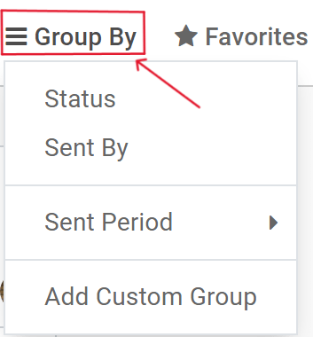Este menú desplegable ofrece distintas formas de incorporar filtros de búsqueda anteriores y otras opciones relacionadas con los registros para personalizar el tablero. Las opciones son: Guardar búsqueda actual, Importar registros, :guilabel:` Añadir a mi tablero ` y Agregar a Hojas de cálculo de Google.
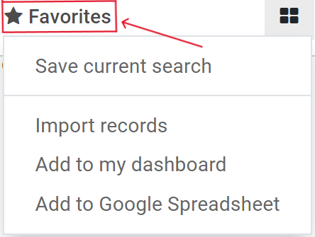Ajustes¶
Para ver (y modificar) los ajustes de Marketing por correo electrónico, vaya a la aplicación .
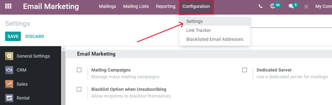En la página Ajustes, hay tres funciones disponibles. Las funciones son: Campañas de correo, Opción de lista negra al darse de baja y Servidor especializado.
Campañas de correo: habilita la opción de gestionar campañas de correo masivo.
Opción de lista negra al darse de baja: permite a los destinatarios incluirse a sí mismos en una lista negra de futuros envíos durante el proceso de baja.
Servidor especializado: proporciona la opción de utilizar un servidor separado y especializado para los correos. Cuando se activa, Odoo revela un nuevo campo (y enlace), en el que se deben introducir las configuraciones específicas del servidor, para que se conecte correctamente a Odoo.
Crear un correo electrónico¶
Para crear un correo electrónico, abra la aplicación y haga clic en el botón Crear ubicado en la esquina superior izquierda.
Hacer clic en Crear mostrará un formulario de correo electrónico en blanco.
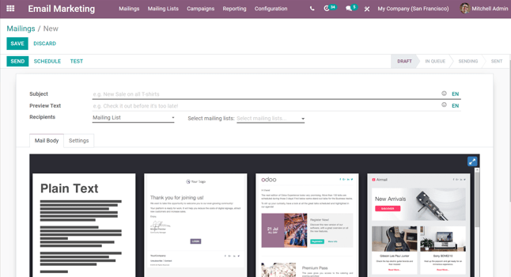En primer lugar, introduzca un Asunto para el correo electrónico. El asunto es visible en la bandeja de entrada de los destinatarios, lo que les permite ver rápidamente de qué trata el mensaje.
Nota
El campo Asunto es obligatorio. No se puede enviar un correo electrónico sin el asunto.
Truco
El icono ☺ (cara sonriente) al final del campo Asunto (y del campo Vista previa del texto) representa emojis. Haga clic en ese icono ☺ (cara sonriente) para mostrar el menú de emojis que pueden utilizarse en cualquiera de los campos.
Después, existe la opción de introducir un Texto de vista previa. Este texto es una frase pegadiza que anima a los destinatarios a abrir el mensaje. En la mayoría de las bandejas de entrada, se muestra junto al asunto.
Truco
Mantenga la etiqueta Vista previa del texto vacía para mostrar los primeros caracteres del contenido del correo electrónico.
Destinatarios¶
Posteriormente, es el momento de elegir los destinatarios de este correo electrónico, lo cual puede completarse en el campo Destinatarios.
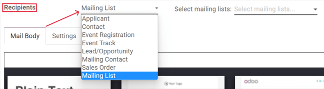La opción predeterminada es Lista de correo. Si se selecciona la opción Lista de correo, es necesario elegir una lista de correo específica del menú desplegable del campo Seleccionar listas de correo adyacente.
Entonces, Odoo solo enviará este correo electrónico a los contactos en esa lista de correo específica.
Ver también
Si hace clic en el campo Destinatarios aparecerá un menú desplegable con otras opciones. Cada opción proporciona diferentes maneras en que Odoo puede crear un público objetivo para el correo electrónico.
Estas opciones (sin incluir la Lista de correo predeterminada) ofrecen la posibilidad de crear un filtro de destinatarios más específico, en un formato similar a una ecuación.
Las opciones del campo Destinatarios son las siguientes:
Candidato: el filtro se enfoca en candidatos específicos de la base de datos.
Contacto: el filtro se centra en contactos específicos de la base de datos.
Registro al evento: el filtro se centra en las personas de la base de datos que se han registrado a eventos.
Sesión del evento: el filtro se centra en las personas de la base de datos que organizaron una plática (sesión) específica en un evento.
Lead/oportunidad: el filtro se enfoca en leads u oportunidades en la base de datos.
Contacto de correo: el filtro se enfoca en contactos de correo específicos en la base de datos.
Orden de venta: filtro se enfoca en órdenes de ventas específicas en la base de datos.
Si los campos de destinatario especificados no aparecen de forma automática, solo haga clic en el botón Agregar filtro debajo del campo Destinatarios. Odoo mostrará los campos necesarios para que pueda segmentar más los destinatarios de este envío por correo.
Agregar un filtro de destinatarios¶
Para agregar un filtro de destinatarios más específico, seleccione cualquier opción de destinatario (que no sea lista de correo) y haga clic en Agregar filtro, si es necesario, para revelar tres campos que tienen el formato de una ecuación.
Para que aparezcan las opciones del submenú, haga clic en cada campo y haga sus selecciones hasta que logre la configuración deseada. El número de registros que coinciden con las reglas se indican a la derecha del campo Destinatarios en verde.
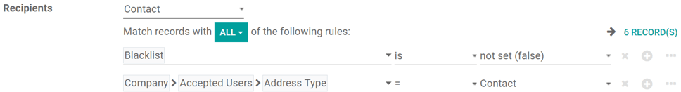Nota
Algunas opciones de submenú en el primer campo de la regla permiten agregar una segunda opción para ser aun más específicos.
A la derecha de cada regla se encuentran los iconos × (eliminar nodo), ＋ (agregar nodo) y ⋯ (agregar rama).
El icono × (eliminar nodo) elimina un nodo específico (línea) de la regla, el icono ＋ (agregar nodo) agrega un nodo (línea) a la regla y el icono ⋯ (agregar rama) agrega una rama al nodo. Una rama significa que se agregan dos subnodos sangrados adicionales a la regla, lo que proporciona aún más especificidad sobre la línea de arriba.
Pestaña del cuerpo del correo¶
En la parte inferior del formulario de correo electrónico hay dos pestañas: Cuerpo del correo y Ajustes. Primero le proporcionaremos información sobre la pestaña Cuerpo del correo.
En la pestaña Cuerpo del correo hay varias plantillas de mensajes preconfiguradas de entre las que puede elegir. Seleccione la plantilla deseada y modifique cada elemento de su diseño con los bloques de creación de arrastrar y soltar de Odoo situados en la barra lateral derecha. Cada bloque de creación proporciona funciones únicas y elementos de diseño profesional.
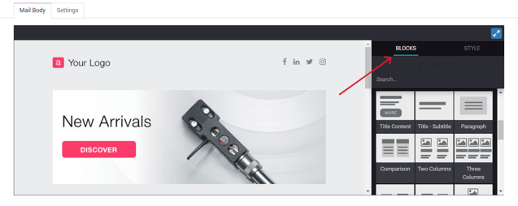Truco
Para redactar un correo electrónico desde cero, seleccione la plantilla Texto sin formato y Odoo le proporcionará una plantilla de correo en blanco que podrá personalizar de varias maneras. Puede utilizar el editor de texto enriquecido del frontend que es compatible con comandos de diagonal (/) o con el editor de código XML; para utilizar este último solo debe habilitar el modo de desarrollador (en modo de solución de bugs) y hacer clic en el icono </>.
Pestaña de ajustes¶
A la derecha de la pestaña Cuerpo del correo se encuentra la pestaña de ajustes.
Nota
Las opciones disponibles en la pestaña ajustes serán distintas si la función Campañas de correo está activada en la página de ajustes de la aplicación ().
Si la función Campañas de correo no está habilitada, entonces la pestaña de ajustes en el formulario de detalle del correo electrónico se ve de la siguiente manera:
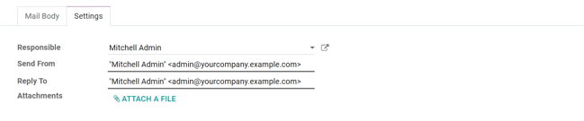Responsable: elija a un empleado (en la base de datos) para que sea responsable de este correo electrónico en particular.
Enviar desde: indique el seudónimo de correo electrónico que aparecerá como remitente de este correo electrónico en particular.
Responder a: indique el seudónimo de correo electrónico al que se enviarán todas las respuestas a este mensaje en particular.
Documentos adjuntos: si necesita enviar algún documento específico (o útil) con la invitación a este evento, puede adjuntarlo al correo electrónico si hace clic en el botón Adjuntar un archivo y agrega los documentos correspondientes.
Cuando la función Campañas de correo está habilitada, aparecen opciones de marketing adicionales en la pestaña ajustes que se ven así:
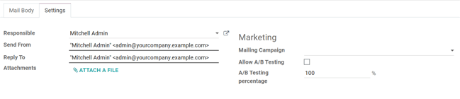Las funciones adicionales son: Campaña de correo, Permitir pruebas A/B y porcentaje de pruebas A/B.
Campañas de correo¶
El campo campaña de correo proporciona la opción de agregar este correo en particular a una campaña de correo electrónico realizada con anterioridad en la base de datos. Haga clic en el campo vacío para mostrar un menú desplegable que contiene todas las campañas de correo realizadas hasta ahora.
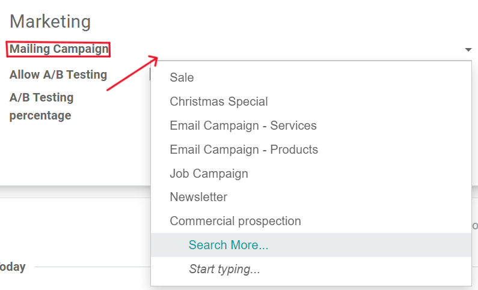Si la campaña deseada no está disponible en el menú desplegable inicial, seleccione Buscar más para abrir una lista completa de todas las campañas de correo en la base de datos. También puede escribir el nombre de la campaña de correo en el campo correspondiente hasta que Odoo muestre la campaña deseada en el menú desplegable, allí podrá seleccionarla.
Crear una nueva campaña de correo (desde la pestaña de ajustes)¶
Para crear una nueva campaña de correo desde el campo correspondiente, comience a escribir el nombre de esta nueva campaña y seleccione Crear [Nombre de la campaña] o Crear y editar….
Haga clic en Nuevo para agregar esta nueva campaña de correo a la base de datos y modificar sus ajustes después. También puede hacer clic en Crear y editar… para agregar esta nueva campaña de correo a la base de datos, Odoo abrirá una ventana emergente.
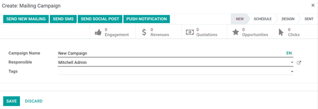Aquí podrá personalizar aún más la nueva campaña de correo. Ajuste el nombre de la campaña, asigne a un responsable y agregue etiquetas.
La fila superior de la ventana emergente Crear: campaña de correo tiene varios botones inteligentes analíticos y cada uno muestra varias métricas relacionadas con la campaña. Al hacer clic en alguno, Odoo abre una página separada y más detallada con estadísticas específicas.
La opción de crear una nueva comunicación de forma instantánea desde esta ventana emergente se encuentra en la esquina superior izquierda. La barra de estado ajustable se ubica en la parte superior derecha.
Haga clic en Guardar cuando haya realizado todas las modificaciones correspondientes. Para eliminar toda la campaña, haga clic en Descartar.
Crear una nueva campaña de correo (desde la página de campañas)¶
Cuando la función Campañas de correo está habilitada, aparece la opción Campañas en el encabezado de la aplicación Marketing por correo electrónico. Las campañas también se pueden crear en la página Campañas de la aplicación Marketing por correo electrónico.
Vaya a la aplicación . Al hacer clic allí, aparece una ventana emergente, en la que puede agregar directamente el nombre de la campaña,el responsable y las etiquetas al tablero de campañas.
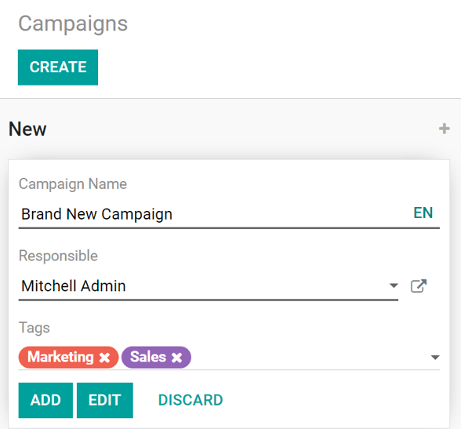Haga clic en Agregar para agregar la campaña a la base de datos y editarla después. También puede hacer clic en Editar y Odoo abrirá el formulario de plantilla de la campaña en una página separada, lo que proporciona la oportunidad de seguir editando la campaña, enviar comunicaciones relacionadas con la campaña y analizar varias de sus métricas relacionadas mediante los botones inteligentes en la parte superior del formulario.
Pruebas A/B¶
En la pestaña Ajustes del correo, si la casilla Pemitir pruebas A/B está seleccionada, solo se les enviará un correo a los destinatarios, lo que permite enviar diferentes correos a los destinatarios seleccionados al azar. Esto prueba la eficacia general del envío y elimina la necesidad de mensajes duplicados.
El campo Porcentaje de prueba A/B representa el porcentaje de contactos en la base de datos a los que se enviará este mensaje como parte de la prueba A/B. Escriba un número entre 1-100, los destinatarios se elegirán al azar.
Enviar, programar o probar¶
Después de finalizar los correos, Odoo proporciona las siguientes opciones en la esquina superior izquierda de la página de la plantilla de correo electrónico: guilabel:Enviar, Programar y Probar.
En el modo editar también están disponibles los botones para guardar o descartar el envío.
Enviar: haga clic para que Odoo envíe el correo electrónico a los destinatarios deseados. Después de que Odoo envía el correo, el estado cambia a Enviado.
Programar: haga clic para abrir una ventana emergente, allí podrá elegir una fecha y hora futura. Odoo envía el correo a los destinatarios elegidos en la fecha y hora que especificó. Cuando se elige una fecha y hora, el estado del correo cambia a En cola.
Enviar prueba - Haga clic para abrir una ventana emergente donde Odoo le permite enviar un correo de prueba. Escriba la dirección de correo electrónico de los destinatarios deseados en el campo Destinatario y haga clic en Enviar correo de prueba.
Guardar - Haga clic para guardar el correo como borrador, el cual podrá editar (y enviar) después. Al hacer clic, el estado del correo continua como Borrador.
Descartar - Haga clic para descartar cualquier cambio que haya hecho desde la última vez que guardo.
Truco
Si selecciona Guardar o Descartar (mientras está en modo Editar), esas opciones se reemplazarán por un botón de Editar y de Crear. Haga clic en Editar para volver al modo Editar. Haga clic en Crear para comenzar un nuevo correo.
Nota
De manera predeterminada, hay un límite diario que se aplica a todos los correos enviados en todas las aplicaciones. Por ello, si hay correos restantes que debe enviar después de haber alcanzado el límite, estos no se enviarán automáticamente al día siguientes. Debe enviarlos manualmente abriendo el correo y haciendo clic en Reintentar.